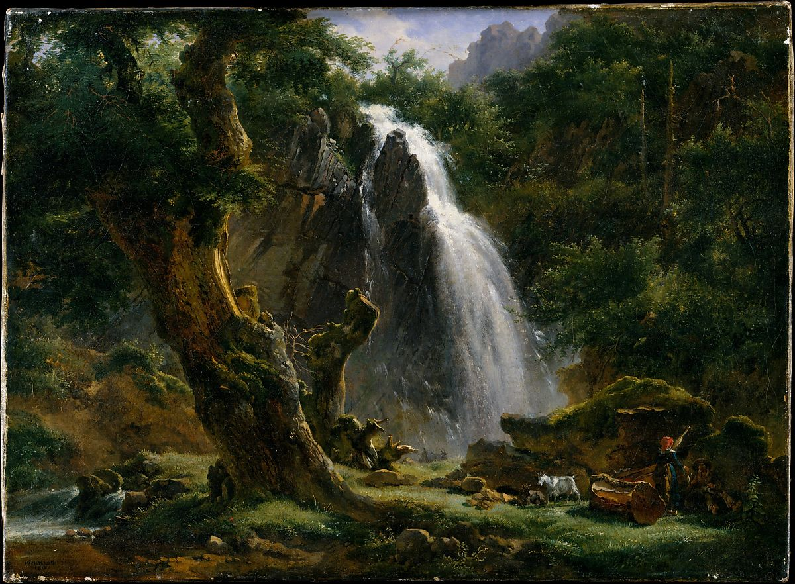

<head>
<meta charset="UTF-8" />
<meta name="keywords" content="drawing, painting" />
<meta name="description" content="drawings by Sunjy" />
<title>Sunjy</title>
<link rel="shortcut icon" type="image/x-icon" href="../../mImages/mCommon/favicon.ico" media="screen" />
<link rel="stylesheet" type="text/css" href="../../mCsses/mCommon/mCssA.css" />
<link rel="stylesheet" type="text/css" href="../../mCsses/mCommon/mCssB.css" />
<link rel="stylesheet" type="text/css" href="../../mCsses/mCommon/mCssC.css" />
<link rel="stylesheet" type="text/css" href="../../mCsses/mCommon/mCssD.css" />
<link rel="stylesheet" type="text/css" href="../../mCsses/mContent/mCssA.css" />
<link rel="stylesheet" type="text/css" href="../../mCsses/mContent/mCssB.css" />
<link rel="stylesheet" type="text/css" href="../../mCsses/mContent/mCssC.css" />
<link rel="stylesheet" type="text/css" href="../../mCsses/mContent/mCssD.css" />
</head>
<script type="text/javascript" src="../../mScripts/mContent/mContentAA.js" /></script>
<script type="text/javascript" src="../../mScripts/mContent/mContentAB.js" /></script>
<script type="text/javascript" src="../../mScripts/mContent/mContentAC.js" /></script>
<script type="text/javascript" src="../../mScripts/mContent/mContentAD.js" /></script>
<script type="text/javascript"></script> 
<script type="text/javascript">
document.write('<div class="mImgAbsolute"></div>');
/*
document.write('<p class="mFontSizeBColor" />From a white paper...</p>');
document.write('<table class="center"><tr><td>');
document.write('');
document.write('</td></tr></table>');
*/
</script>


<script type="text/javascript">
document.write('<p class="mFontSizeBColor" />Waterfall at Mont-Dore</p>');
document.write('<p class="mFontSizeSColor" />By Achille-Etna Michallon, 1818. This painting depicts a waterfall in the Auvergne, although it was painted in Italy. It embodies the vigorous naturalist aesthetic that distinguishes Michallon’s achievement from much of the tepid Neoclassicism of the early nineteenth century. <br><br>Until the bulk of Michallon’s work was brought to light in 1930, the artist’s role as one of the creators of the new school of landscape painting was obscured by the renown of his pupil Camille Corot. Historians were compelled to change their view when the source of Corot&#39;s vision became apparent in the work of the young artist who had first taught him how to paint.</p>');
document.write('<table class="center" /><tr><td>');
document.write('<br>Until the bulk of Michallon’s work was brought to light in 1930, the artist’s role as one of the creators of the new school of landscape painting was obscured by the renown of his pupil Camille Corot. Historians were compelled to change their view when the source of Corot&#39;s vision became apparent in the work of the young artist who had first taught him how to paint." />');
document.write('</td></tr></table>');
</script>


